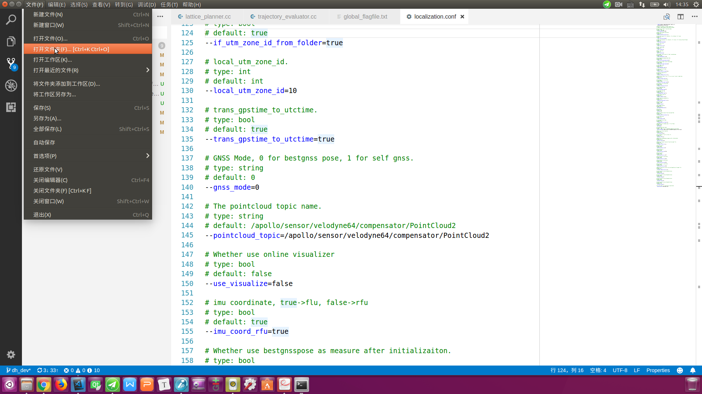
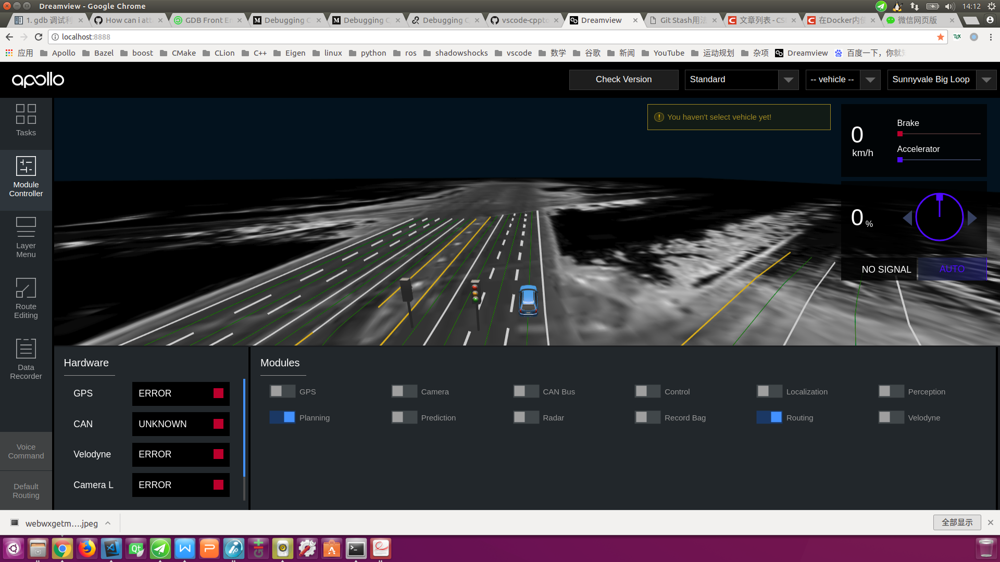
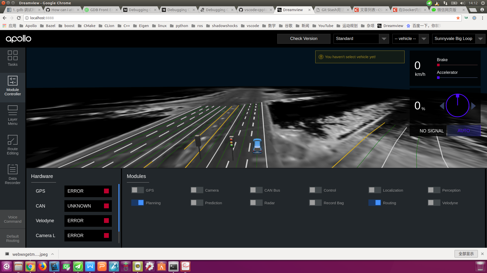
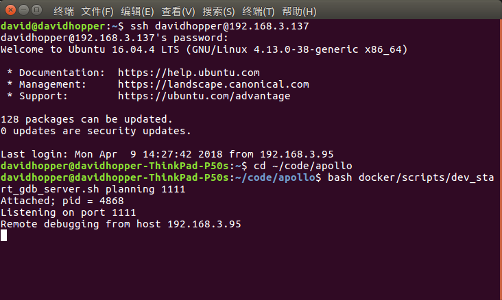

使用VSCode构建、调试Apollo项目#
Apollo项目以其优异的系统架构、完整的模块功能、良好的开源生态及规范的代码风格，受到众多开发者的喜爱和好评。然而，该项目使用命令行编译和调试，不能使用IDE开发，既不直观，也不利于提高效率。我有点追求完美，必须想办法让Apollo项目能在IDE中编译、调试。
Visual Studio Code（以下简称VSCode）是微软第一款支持Linux的轻量级代码编辑器，其功能介于编辑器与IDE之间，但更倾向于一个编辑器。优点是运行速度快，占用内存少，使用方法与Visual Stuio类似。缺点在于，与Visual Studio、QT等IDE相比，功能还不够强大。我认为，Windows中最强大的C++ IDE为Visual Studio，Linux中最强大的C++ IDE为QT。Apollo项目目前只支持Ubuntu系统（Mac OS系统部分支持），Windows系统中的Visual Studio自然排除在外；此外，Apollo项目使用Bazel编译，而QT目前只支持QMake和CMake工程，因此只能忍痛割爱。在无法使用上述两种IDE的前提下，退而求次选用VSCode。我写了几个配置文件，允许使用VSCode编译、调试Apollo项目，下面对其进行具体阐述，希望能给广大开发者带来一定的帮助。
一、使用VSCode编译Apollo项目#
首先从GitHub网站下载Apollo源代码，可以使用git命令下载，也可以直接通过网页下载压缩包。源代码下载完成后，将其放置到合适的目录。使用VSCode编译Apollo项目有一个前提，就是在你的机器上已经顺利安装了Docker。Apollo之前版本提供了一个“install_docker.sh”脚本文件，因为很多开发者反映可能出错，Apollo项目组已将该文件移除。现在要安装Docker就只能参考Docker官方网站的帮助文档了。
1.1 编译方法#
打开“Visual Studio Code”，执行菜单命令“文件->打开文件夹”，在弹出的对话框中，选择“Apollo”项目源文件夹，点击“确定”，如下图所示：

 之后，执行菜单命令“任务->运行生成任务”或直接按快捷键“Ctrl+Shift+B”（与Visual Studio和QT的快捷键一致）构建工程，若之前没有启动过Docker，则编译时会启动Docker，需在底部终端窗口输入超级用户密码，如下图所示：
命令执行完毕，若在底部终端窗口出现“终端将被任务重用，按任意键关闭。”信息（如下图所示），则表示构建成功。整个过程一定要保持网络畅通，否则无法下载依赖包。
之后，执行菜单命令“任务->运行生成任务”或直接按快捷键“Ctrl+Shift+B”（与Visual Studio和QT的快捷键一致）构建工程，若之前没有启动过Docker，则编译时会启动Docker，需在底部终端窗口输入超级用户密码，如下图所示：
命令执行完毕，若在底部终端窗口出现“终端将被任务重用，按任意键关闭。”信息（如下图所示），则表示构建成功。整个过程一定要保持网络畅通，否则无法下载依赖包。
1.2 配置文件解析#
我在.vscode/tasks.json文件中总共配置了四个常见的任务：build the apollo project（构建Apollo项目）、run all unit tests for the apollo project（运行Apollo项目的所有单元测试）、code style check for the apollo project（Apollo项目的代码风格检查）、clean the apollo project（清理Apollo项目）。其中第一个任务是默认生成任务，可以直接按快捷键“Ctr+Shift+B”调用，其他任务可通过执行菜单命令：任务->运行任务(R)…，在弹出的窗口中，选择对应选项即可，如下图所示：
下面是具体的配置内容，请参考里面的注释来调整编译任务以满足你的构建需求：
{
"version": "2.0.0",
"tasks": [
{
"label": "build the apollo project",
"type": "shell",
// 可根据"apollo.sh"提供的选项来调整编译任务，例如：build_gpu
"command": "bash apollo_docker.sh build",
"group": {
"kind": "build",
"isDefault": true // default building task invoked by "Ctrl+Shift+B"
},
// 格式化错误信息
"problemMatcher": {
"owner": "cc",
"fileLocation": [
"relative",
"${workspaceFolder}"
],
"pattern": {
"regexp": "^(.*):(\\d+):(\\d+):\\s+(warning|error):\\s+(.*)$",
"file": 1,
"line": 2,
"column": 3,
"severity": 4,
"message": 5
}
}
},
{
"label": "run all unit tests for the apollo project",
"type": "shell",
"command": "bash apollo_docker.sh test",
"problemMatcher": {
"owner": "cc",
"fileLocation": [
"relative",
"${workspaceFolder}"
],
"pattern": {
"regexp": "^(.*):(\\d+):(\\d+):\\s+(warning|error):\\s+(.*)$",
"file": 1,
"line": 2,
"column": 3,
"severity": 4,
"message": 5
}
}
},
{
"label": "code style check for the apollo project",
"type": "shell",
"command": "bash apollo_docker.sh lint",
"problemMatcher": {
"owner": "cc",
"fileLocation": [
"relative",
"${workspaceFolder}"
],
"pattern": {
"regexp": "^(.*):(\\d+):(\\d+):\\s+(warning|error):\\s+(.*)$",
"file": 1,
"line": 2,
"column": 3,
"severity": 4,
"message": 5
}
}
},
{
"label": "clean the apollo project",
"type": "shell",
"command": "bash apollo_docker.sh clean",
"problemMatcher": {
"owner": "cc",
"fileLocation": [
"relative",
"${workspaceFolder}"
],
"pattern": {
"regexp": "^(.*):(\\d+):(\\d+):\\s+(warning|error):\\s+(.*)$",
"file": 1,
"line": 2,
"column": 3,
"severity": 4,
"message": 5
}
}
}
]
}
1.3 可能存在的问题及解决方法#
1.3.1 编译时遇到“ERROR: query interrupted”错误
这是由于bazel内部缓存不一致造成的。 解决方法： 按任意键退出编译过程，在VSCode的命令终端窗口（如果未打开，按快捷键“Ctrl + `”开启）执行如下命令进入Docker环境：
bash docker/scripts/dev_into.sh
在Docker环境中输入如下命令，执行bazel的清理缓存任务（一定要保持网络畅通，以便成功下载依赖包，否则该命令即使执行一万次也不会奏效）：
bazel query //...
最后输入exit命令退出Docker环境，按快捷键“Ctrl+Shift+B”，重新执行构建任务。
1.3.2 编译时长时间停留在“Building: no action running”界面
这是由于当前系统中存在多个不同版本的Docker或者是bazel内部缓存不一致造成的。 解决方法： 按快捷键“Ctrl+C”键终止当前构建过程，在VSCode的命令终端窗口（如果未打开，按快捷键“Ctrl + `”开启），使用下述方法中的任意一种，停止当前运行的Docker：
# 方法1：停止当前所有的Apollo项目Docker
docker stop $(docker ps -a | grep apollo | awk '{print $1}')
# 方法2：停止当前所有的Docker
docker stop $(docker ps -aq)
执行VSCode的菜单命令：任务->运行任务(R)…，在弹出的窗口中，选择 “clean the apollo project”（清理Apollo项目）。待清理完毕后，按快捷键“Ctrl+Shift+B”，重新构建Apollo项目。
1.3.3 编译时出现类似“Another command (pid=2466) is running. Waiting for it to complete…”的错误
这是由于在其他命令行终端进行编译或是在之前编译时按下“Ctrl+C”键强行终止但残留了部分编译进程所引起的。 解决方法： 按快捷键“Ctrl+C”键终止当前构建过程，在VSCode的命令终端窗口（如果未打开，按快捷键“Ctrl + `”开启），使用如下命令终止残留的编译进程：
# 1.进入Docker
bash docker/scripts/dev_into.sh
# 2.杀死Docker中残留的编译进程
pkill bazel-real
# 3.查看Docker中是否残留bazel-real进程，若有则按“q”退出，再次执行步骤2。
# 也可使用“ps aux | grep bazel-real”查看
top
# 4.退出Docker
exit
按快捷键“Ctrl+Shift+B”，重新执行构建任务。
二、使用VSCode本地调试Apollo项目#
Apollo项目运行于Docker中，不能在宿主机（所谓宿主机就是运行Docker的主机，因为Docker服务像寄宿于主机中，故有此称呼）中直接使用GDB调试，而必须先在Docker中借助GDBServer创建调试服务进程，再在宿主机中使用GDB连接Docker中的调试服务进程来完成。下面介绍具体操作方法：
2.1 前提条件#
2.1.1 编译Apollo项目需带调试信息
编译Apollo项目时需使用build或build_gpu等带调试信息的选项，而不能使用build_opt或build_opt_gpu等优化选项。
2.2.2 Docker内部已安装GDBServer
进入Docker后，可使用如下命令查看：
gdbserver --version
若提示类似如下信息：
GNU gdbserver (Ubuntu 7.7.1-0ubuntu5~14.04.3) 7.7.1
Copyright (C) 2014 Free Software Foundation, Inc.
gdbserver is free software, covered by the GNU General Public License.
This gdbserver was configured as "x86_64-linux-gnu"
则表示Docker内部已安装了GDBServer。 若提示如下信息：
bash: gdbserver: command not found
则表示Docker内部未安装GDBServer，可使用如下命令安装：
sudo apt-get install gdbserver
2.2 Docker内部的操作#
2.2.1 启动Dreamview后台服务程序
进入Docker，启动Dreamview，命令如下：
cd your_apollo_project_root_dir
# 如果没有启动Docker，首先启动，否则忽略该步
bash docker/scripts/dev_start.sh -C
# 进入Docker
bash docker/scripts/dev_into.sh
# 启动Dreamview后台服务
bash scripts/bootstrap.sh
2.2.2 启动待调试模块
启动待调试模块，既可使用命令行操作，也可借助Dreamview界面完成。我肯定喜欢使用Dreamview界面操作了，下面以调试“planning”模块为例进行说明。
打开Chrome浏览器，输入网址：http://localhost:8888/，打开Dreamview界面，打开“SimControl”选项，如下图所示：
 点击左侧工具栏“Module Controler”标签页，选中“Routing”和“Planning”选项，如下图所示：

点击左侧工具栏“Default Routing”标签页，选中“Route: Reverse Early Change Lane”或其中任意一个选项，发送“Routing Request”请求，生成全局导航路径，如下图所示：
点击左侧工具栏“Module Controler”标签页，选中“Routing”和“Planning”选项，如下图所示：

点击左侧工具栏“Default Routing”标签页，选中“Route: Reverse Early Change Lane”或其中任意一个选项，发送“Routing Request”请求，生成全局导航路径，如下图所示：

2.2.3 查看“Planning”进程ID
使用如下命令，查看“Planning”进程ID：
ps aux | grep mainboard | grep planning
结果类似下图，可以看到“Planning”进程ID为4147。

2.2.4 使用GDBServer附加调试“Planning”进程
接下来需要进行我们的关键操作了，使用GDBServer附加调试“Planning”进程，命令如下：
sudo gdbserver :1111 --attach 4147
上述命令中，“:1111”表示开启端口为“1111”的调试服务进程，“4147”表示步骤2.2.3中查到的“Planning”进程ID。若结果如下图所示，则表示操作成功。
 重新开启一个命令终端，进入Docker后，使用如下命令可看到“gdbserver”进程已正常运行：
重新开启一个命令终端，进入Docker后，使用如下命令可看到“gdbserver”进程已正常运行：
ps aux | grep gdbserver

2.2.5 使用脚本文件启动GDBServer
我写了两个脚本文件：scripts/start_gdb_server.sh、docker/scripts/dev_start_gdb_server.sh，其中前者用于在Docker内部启动GDBServer，后者直接在宿主机（Docker外部）启动GDBServer。
假设调试planning模块，端口号为1111，scripts/start_gdb_server.sh的使用方法为：
# 进入Docker
bash docker/scripts/dev_into.sh
# 启动gdbserver
bash scripts/start_gdb_server.sh planning 1111
假设调试planning模块，端口号为1111，docker/scripts/dev_start_gdb_server.sh的使用方法为：
# 在宿主机中（Docker外部）直接启动gdbserver
bash docker/scripts/dev_start_gdb_server.sh planning 1111
在2.3节我还将继续配置VSCode文件，以便在VSCode中直接按快捷键“F5”就可启动调试。
start_gdb_server.sh的内容如下：
#!/usr/bin/env bash
function print_usage() {
RED='\033[0;31m'
BLUE='\033[0;34m'
BOLD='\033[1m'
NONE='\033[0m'
echo -e "\n${RED}Usage${NONE}:
.${BOLD}/start_gdb_server.sh${NONE} MODULE_NAME PORT_NUMBER"
echo -e "${RED}MODULE_NAME${NONE}:
${BLUE}planning${NONE}: debug the planning module.
${BLUE}control${NONE}: debug the control module.
${BLUE}routing${NONE}: debug the routing module.
..., and so on."
echo -e "${RED}PORT_NUMBER${NONE}:
${NONE}a port number, such as '1111'."
}
if [ $# -lt 2 ];then
print_usage
exit 1
fi
DIR="$( cd "$( dirname "${BASH_SOURCE[0]}" )" && pwd )"
source "${DIR}/apollo_base.sh"
MODULE_NAME=$1
PORT_NUM=$2
shift 2
# If there is a gdbserver process running, stop it first.
GDBSERVER_NUMS=$(pgrep -c -x "gdbserver")
if [ ${GDBSERVER_NUMS} -ne 0 ]; then
sudo pkill -SIGKILL -f "gdbserver"
fi
echo ${MODULE_NAME}
# Because the "grep ${MODULE_NAME}" always generates a process with the name of
# "${MODULE_NAME}", I added another grep to remove grep itself from the output.
PROCESS_ID=$(ps -ef | grep "mainboard" | grep "${MODULE_NAME}" | grep -v "grep" | awk '{print $2}')
echo ${PROCESS_ID}
# If the moudle is not started, start it first.
if [ -z ${PROCESS_ID} ]; then
#echo "The '${MODULE_NAME}' module is not started, please start it in the dreamview first. "
#exit 1
# run function from apollo_base.sh
# run command_name module_name
run ${MODULE_NAME} "$@"
PROCESS_ID=$(ps -ef | grep "mainboard" | grep "${MODULE_NAME}" | grep -v "grep" | awk '{print $2}')
echo ${PROCESS_ID}
fi
sudo gdbserver :${PORT_NUM} --attach ${PROCESS_ID}
dev_start_gdb_server.sh的内容如下：
#!/usr/bin/env bash
function check_docker_open() {
docker ps --format "{{.Names}}" | grep apollo_dev 1>/dev/null 2>&1
if [ $? != 0 ]; then
echo "The docker is not started, please start it first. "
exit 1
fi
}
function print_usage() {
RED='\033[0;31m'
BLUE='\033[0;34m'
BOLD='\033[1m'
NONE='\033[0m'
echo -e "\n${RED}Usage${NONE}:
.${BOLD}/dev_debug_server.sh${NONE} MODULE_NAME PORT_NUMBER"
echo -e "${RED}MODULE_NAME${NONE}:
${BLUE}planning${NONE}: debug the planning module.
${BLUE}control${NONE}: debug the control module.
${BLUE}routing${NONE}: debug the routing module.
..., and so on."
echo -e "${RED}PORT_NUMBER${NONE}:
${NONE}a port number, such as '1111'."
}
if [ $# -lt 2 ];then
print_usage
exit 1
fi
check_docker_open
DIR="$( cd "$( dirname "${BASH_SOURCE[0]}" )" && pwd )"
cd "${DIR}/../.."
# pwd
xhost +local:root 1>/dev/null 2>&1
#echo $@
docker exec \
-u $USER \
-it apollo_dev \
/bin/bash scripts/start_gdb_server.sh $@
xhost -local:root 1>/dev/null 2>&1
2.3 宿主机上VSCode内部的操作#
在宿主机上使用VSCode打开Apollo项目（必须是你刚才构建的版本），打开需要调试的文件，在指定位置设置断点，按“F5”键启动调试。注意：由于VSCode使用脚本语言编写，因此启动过程会较慢，若加上网速不够快，甚至出现一分钟等待也有可能。调试方法和Visual Studio类似，此处不再赘述。如下图所示：

2.4 配置文件解析#
我对.vscode/launch.json文件作出配置以便能在VSCode中连接Docker中的调试服务进程。此外，为了能在VSCode中直接启动GDBServer，我在.vscode/launch.json文件中添加了一个调试前启动任务："preLaunchTask": "start gdbserver"，该任务对应于.vscode/tasks.json文件中的一个启动GDBServer的任务，因为GDBServer启动后会一直阻塞命令行窗口，且无法通过在命令后面添加&的方式进行后台启动，我只能将其配置为一个VSCode的后台运行任务。
.vscode/launch.json文件的配置内容如下：
{
"version": "0.2.0",
"configurations": [
{
"name": "C++ Launch",
"type": "cppdbg",
"request": "launch",
"program": "${workspaceRoot}/bazel-bin/cyber/mainboard",
// You can change "localhost:1111" to another "IP:port" name, but it
// should be same as those in gdbserver of the docker container.
"miDebuggerServerAddress": "localhost:1111",
// You can set the name of the module to be debugged in the
// ".vscode/tasks.json" file, for example "planning".
// Tips: search the label "start gdbserver" in ".vscode/tasks.json".
// The port number should be consistent with this file.
"preLaunchTask": "start gdbserver",
"args": [],
"stopAtEntry": false,
"cwd": "${workspaceRoot}",
"environment": [],
"externalConsole": true,
"linux": {
"MIMode": "gdb"
},
"osx": {
"MIMode": "gdb"
},
"windows": {
"MIMode": "gdb"
}
}
]
}
.vscode/tasks.json文件中用于启动GDBServer的任务配置如下：
{
"label": "start gdbserver",
"type": "shell",
// you can change the "planning" module name to another one and
// change the "1111" to another port number. The port number should
// be same as that in the "launch.json" file.
"command": "bash docker/scripts/dev_start_gdb_server.sh planning 1111",
"isBackground": true,
"problemMatcher": {
"owner": "custom",
"pattern": {
"regexp": "__________"
},
"background": {
"activeOnStart": true,
// Don't change the following two lines, otherwise the
// gdbserver can't run in the background.
"beginsPattern": "^Listening on port$",
"endsPattern": "^$"
}
}
}
2.5 可能碰到的问题及解决方法#
调试过程中，可能会碰到以下问题：
一是Docker内部待调试进程崩溃，无法在VSCode中调试（如下图所示），解决办法是：重启Docker内部的调试进程；

二是网络连接不畅，无法在VSCode中调试，解决办法是：确保网络畅通，并停用代理工具；
三是在VSCode内部关闭调试后，会同时将Docker内部的调试服务进程关闭，可能会出现无法直接在VSCode再次启动调试服务里程的情形，解决办法是：在Docker内部重启调试服务进程，再在VSCode中按“F5”键启动调试。
三、使用VSCode远程调试Apollo项目#
研发过程中，我们还需远程调试车内工控机上的Apollo项目，即在调试电脑上借助SSH服务连接车内工控机，启动工控机内相关进程，然后在调试电脑上进行远程调试。下面以调试planning模块为例进行具体阐述：
3.1 查看车内工控机IP地址#
在车内工控机上，通过如下命令查看本机IP：
ifconfig
如下图所示，白色选中部分：192.168.3.137即为车内工控机的局域网IP地址。
3.2 在调试电脑的浏览器中打开Dreamview并启动待调试模块#
假设车内工控机局域网IP地址为：192.168.3.137，打开Chrome或Firefox浏览器，输入如下网址：http://192.168.3.137:8888/，按照2.2.2节中的方法，启动待调试的planning及其依赖的routing模块。

3.3 使用SSH命令远程登录车内工控机并启动工控机的gdbserver服务#
假设车内工控机的用户名为：davidhopper，局域网IP地址为：192.168.3.137，使用如下命令远程登录车内工控机：
ssh davidhopper@192.168.3.137
成功进入工控机后，假设需调试planning模块，端口号为1111，使用如下命令启动车内工控机的gdbserver服务：
# 切换到工控机上Apollo项目根目录
cd ~/code/apollo
# 在Docker外部启动gdbserver服务
bash docker/scripts/dev_start_gdb_server.sh planning 1111
如下图所示，如看到类似Listening on port 1111的提示，表示gdbserver服务顺利启动。

3.4 在调试电脑上使用VSCode远程调试工控机上的planning模块#
在调试电脑上使用VSCode打开Apollo项目，注意项目版本应与工控机上的版本一致，否则调试起来会输出许多不一致的信息。首先，将配置文件.vscode/launch.json中的调试前加载任务："preLaunchTask": "start gdbserver",注释掉，再将远程调试服务地址修改为："miDebuggerServerAddress": "192.168.3.137:1111",，如下图所示：
 在需要的位置设置断点，按
在需要的位置设置断点，按F5键启动调试，因为是远程连接，启动等待的时间会更长，甚至会超过1分钟。下图是远程调试界面。注意：每次在VSCode中中止调试后，需再次启动调试时，一定要再次在命令行终端执行3.3节的操作，重启工控机内的gdbserver服务进程。在本机调试时，因为我配置了一个preLaunchTask任务，就可省略此步骤。